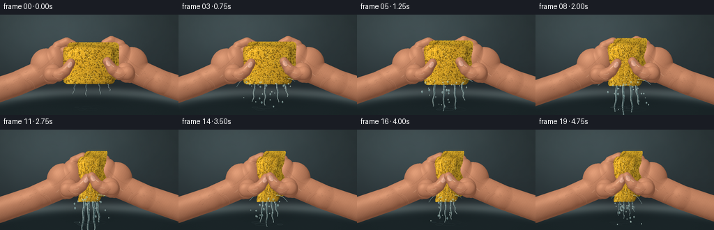
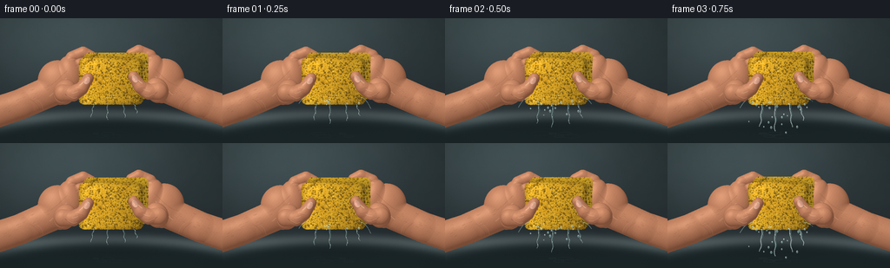

CODING AGENTS AS PIXEL WORLD MODELS
traex/GPT-6.1-Sol · mechanics_0015
点击播放 · 原生 RGB 像素
逐轮保存的候选
回放视频、检查图与代码变化。
每份候选均可单独播放。实际图片检查记录在下方工具轨迹中。
候选 01播放与检查图
点击播放 · 原生 RGB 像素


展开代码变化
--- 上一保存版本
+++ 本次保存版本
@@ -0,0 +1,395 @@
+from pathlib import Path
+import math
+import numpy as np
+from PIL import Image, ImageDraw, ImageFilter
+import artifact_io
+
+ROOT=Path(__file__).resolve().parent
+W,H=256,144
+S=3
+WW,HH=W*S,H*S
+Y,X=np.mgrid[0:HH,0:WW].astype(np.float32)/S
+rng=np.random.default_rng(1248)
+
+def noise_map(w,h,seed):
+ r=np.random.default_rng(seed)
+ out=np.zeros((h,w),np.float32)
+ for grid,amp in [(5,.45),(15,.25),(45,.16),(120,.08),(300,.06)]:
+ a=r.normal(0,1,(max(2,int(grid*h/w)),grid)).astype(np.float32)
+ im=Image.fromarray(a,'F').resize((w,h),Image.Resampling.BICUBIC)
+ out+=np.asarray(im)*amp
+ return out
+NOISE=noise_map(WW,HH,43)
+MICRO=np.random.default_rng(953).normal(0,1,(HH,WW)).astype(np.float32)
+
+
+def poly(draw,pts,fill):
+ draw.polygon([(round(x*S),round(y*S)) for x,y in pts],fill=fill)
+def line(draw,pts,fill,width=1):
+ draw.line([(round(x*S),round(y*S)) for x,y in pts],fill=fill,width=max(1,round(width*S)),joint='curve')
+def bezier(p,n=30):
+ p=np.array(p,float);t=np.linspace(0,1,n)[:,None]
+ return (1-t)**3*p[0]+3*(1-t)**2*t*p[1]+3*(1-t)*t**2*p[2]+t**3*p[3]
+def curve(draw,pts,fill,width=1):
+ line(draw,bezier(pts),fill,width)
+
+def background():
+ # A subdued, defocused stainless-steel basin: no distracting scenery.
+ grad=np.clip((Y-8)/140,0,1)
+ light=np.exp(-((X-80)/125)**2-((Y-22)/77)**2)
+ base=np.stack([44+24*light-10*grad,54+29*light-12*grad,56+30*light-10*grad],-1)
+ base+=NOISE[...,None]*2
+ im=Image.fromarray(np.uint8(np.clip(base,0,255)))
+ d=ImageDraw.Draw(im,'RGBA')
+ d.ellipse((-95*S,108*S,345*S,205*S),fill=(113,128,130,255))
+ d.ellipse((-95*S,113*S,345*S,209*S),fill=(44,57,60,255))
+ d.ellipse((-74*S,118*S,335*S,230*S),fill=(28,39,42,255))
+ d.arc((-70*S,110*S,330*S,232*S),180,355,fill=(157,170,166,130),width=2*S)
+ im=im.filter(ImageFilter.GaussianBlur(4*S))
+ return np.array(im).astype(np.float32)
+BG=background()
+
+# A fixed material map: irregular, deep cellulose pores, not a regular dot pattern.
+def sponge_texture():
+ tw,th=640,480
+ texnoise=noise_map(tw,th,813)
+ fine=np.random.default_rng(773).normal(0,1,(th,tw)).astype(np.float32)
+ col=np.stack([220+12*texnoise,167+16*texnoise,39+8*texnoise],-1)
+ col+=fine[...,None]*2.0
+ im=Image.fromarray(np.uint8(np.clip(col,0,255))).convert('RGB')
+ d=ImageDraw.Draw(im,'RGBA')
+ r=np.random.default_rng(180)
+ # Multiple pore scales; skewed and interrupted rims mimic open-cell foam.
+ for _ in range(2450):
+ cx=r.uniform(-6,tw+6);cy=r.uniform(-6,th+6)
+ rr=float(np.clip(r.lognormal(1.0,.66),.7,13))
+ rx=rr*r.uniform(.75,1.6);ry=rr*r.uniform(.65,1.45)
+ angle=r.uniform(0,6.283)
+ pts=[]
+ for j in range(11):
+ a=j*2*np.pi/11
+ q=r.uniform(.76,1.15)
+ px=rx*np.cos(a)*q;py=ry*np.sin(a)*q
+ pts.append((cx+px*np.cos(angle)-py*np.sin(angle),cy+px*np.sin(angle)+py*np.cos(angle)))
+ d.polygon(pts,fill=(124,86,15,int(r.uniform(110,200))))
+ inner=[(cx+(px-cx)*.62,cy+(py-cy)*.65+.4*rr) for px,py in pts]
+ d.polygon(inner,fill=(83,66,16,int(r.uniform(50,120))))
+ lower=[(px+.2,py+.35*rr) for px,py in pts[1:6]]
+ d.line(lower,fill=(255,217,72,155),width=max(1,int(rr*.28)))
+ d.line(pts[6:10],fill=(105,75,10,95),width=1)
+ im=im.filter(ImageFilter.GaussianBlur(.38))
+ return np.asarray(im).astype(np.float32)
+TEX=sponge_texture()
+
+def sample(tex,u,v):
+ th,tw=tex.shape[:2]
+ xx=np.clip(u*(tw-1),0,tw-1.001);yy=np.clip(v*(th-1),0,th-1.001)
+ xi=xx.astype(np.int32);yi=yy.astype(np.int32)
+ fx=(xx-xi)[...,None];fy=(yy-yi)[...,None]
+ return (tex[yi,xi]*(1-fx)+tex[yi,xi+1]*fx)*(1-fy)+(tex[yi+1,xi]*(1-fx)+tex[yi+1,xi+1]*fx)*fy
+
+
+def composite(img,color,alpha):
+ return img*(1-alpha[...,None])+color*alpha[...,None]
+
+def add_surface(z,new,k=3.0):
+ valid=new>-900
+ both=valid & (z>-900)
+ diff=np.abs(z-new)
+ blend=np.maximum(k-diff,0)**2/(4*k)
+ z=np.where(valid,np.maximum(z,new),z)
+ z=np.where(both,z+blend,z)
+ return z
+
+def ellipsoid(z,cx,cy,rx,ry,rz,cz=0,ang=0):
+ a=math.radians(ang);c=math.cos(a);s=math.sin(a)
+ dx=X-cx;dy=Y-cy
+ u=(dx*c+dy*s)/rx;v=(-dx*s+dy*c)/ry
+ q=1-u*u-v*v
+ surf=np.where(q>0,cz+rz*np.sqrt(np.maximum(q,0)),-1000)
+ return add_surface(z,surf,3.2)
+
+def capsule(z,pts,radii,depth=9,rz=None,k=3):
+ if rz is None:rz=np.mean(radii)*.83
+ for i in range(len(pts)-1):
+ a=np.array(pts[i]);b=np.array(pts[i+1]);v=b-a
+ t=np.clip(((X-a[0])*v[0]+(Y-a[1])*v[1])/(v@v),0,1)
+ rad=radii[i]+t*(radii[i+1]-radii[i])
+ dx=X-a[0]-t*v[0];dy=Y-a[1]-t*v[1]
+ q=1-(dx*dx+dy*dy)/(rad*rad)
+ surf=np.where(q>0,depth+rz*np.sqrt(np.maximum(q,0)),-1000)
+ z=add_surface(z,surf,k)
+ return z
+
+
+def skin_from_depth(z,shift,side,pressure):
+ mask=z>-500
+ # Continue heights past the outline only for a stable normal at the silhouette.
+ zz=np.where(mask,z,0)
+ zz=np.asarray(Image.fromarray(zz.astype(np.float32),'F').filter(ImageFilter.GaussianBlur(.42*S))) if False else zz
+ gy,gx=np.gradient(zz,1/S)
+ den=np.sqrt(1+gx*gx+gy*gy)
+ nx=-gx/den;ny=-gy/den;nz=1/den
+ diffuse=np.clip(-.37*nx-.55*ny+.75*nz,0,1)
+ shade=.57+.49*diffuse
+ # Warm subsurface shadows and subtle skin mottling.
+ n=NOISE + .18*np.sin((X-shift)*1.8+Y*1.2)
+ base=np.stack([196+n*5.4,133+n*4.3,100+n*3.3],-1)
+ if side==1:base+=np.array([4,3,2])
+ base*=shade[...,None]
+ shadow=(1-diffuse)[...,None]
+ base+=shadow*np.array([16,4,0])
+ spec=np.maximum(-.24*nx-.33*ny+.91*nz,0)**25
+ base+=spec[...,None]*np.array([23,21,18])
+ base+=MICRO[...,None]*.66
+ return np.clip(base,0,255),mask.astype(np.float32)
+
+
+def hand(img,side,edge,pressure,front=False):
+ # Mirror a left-hand coordinate system; wrists remain out of frame.
+ def point(x,y):
+ dx=edge-91
+ return ((x+dx) if side==0 else (256-x-dx), y+(0 if side==0 else -2))
+ z=np.full((HH,WW),-1000.,np.float32)
+ if not front:
+ arm=[point(-26,116),point(24,99),point(65,81)]
+ z=capsule(z,arm,[18,17.5,18],depth=0,rz=15,k=6)
+ px,py=point(68,74)
+ z=ellipsoid(z,px,py,24,26,17,cz=1,ang=(-22 if side==0 else 22))
+ px,py=point(81,64)
+ z=ellipsoid(z,px,py,14,21,14,cz=5,ang=(-12 if side==0 else 12))
+ # Four separate phalange chains curling behind the wet block.
+ fingers=[([(76,57),(83,45),(96,39),(105,43)],[7.4,7,6.6,5.8]),
+ ([(82,64),(91,53),(103,49),(110,54)],[7.2,7,6.4,5.7]),
+ ([(82,73),(94,64),(105,60),(111,64)],[6.8,6.5,6,5.2]),
+ ([(78,82),(92,76),(101,72),(107,76)],[6.1,5.8,5.3,4.7])]
+ for points,rads in fingers:
+ z=capsule(z,[point(*p) for p in points],rads,depth=6,rz=6,k=3)
+ else:
+ # The opposing thumbs lie on the visible face and turn inward/upward.
+ pts=[(73,86),(84,87),(94,81),(102,69)]
+ z=capsule(z,[point(*p) for p in pts],[10.0,9.0,7.8,6.2],depth=18,rz=7.5-1.3*pressure,k=3.5)
+ px,py=point(75,85)
+ z=ellipsoid(z,px,py,13,15,10,cz=12,ang=25 if side==0 else -25)
+ colors,alpha=skin_from_depth(z,edge-91,side,pressure)
+ img=composite(img,colors,alpha)
+ # Skin folds, tendon shading and fine creases, clipped to the hand.
+ ov=Image.new('RGBA',(WW,HH),(0,0,0,0));d=ImageDraw.Draw(ov)
+ def c(points,col,width):curve(d,[point(*p) for p in points],col,width)
+ if not front:
+ c([(35,93),(41,97),(46,102),(46,106)],(96,50,30,80),.45)
+ c([(38,91),(46,95),(49,99),(50,105)],(255,207,170,50),.4)
+ c([(51,80),(62,78),(72,65),(78,60)],(106,56,34,38),.7)
+ c([(57,90),(68,82),(71,73),(77,69)],(255,216,180,43),.9)
+ for x,y in [(85,47),(92,55),(95,66),(94,76)]:
+ c([(x-5,y),(x-3,y-2),(x+2,y-2),(x+4,y)],(104,56,36,80),.48)
+ c([(x-4,y+1.4),(x-1,y-.2),(x+1,y),(x+3,y+1.3)],(255,210,170,56),.35)
+ hr=np.random.default_rng(228+side)
+ for i in range(22):
+ x=hr.uniform(4,59);y=104-.40*x+hr.uniform(-8,8)
+ c([(x,y),(x+1,y-.7),(x+2.2,y-1),(x+3,y-1.8)],(74,49,31,hr.integers(22,48).item()),.23)
+ else:
+ for dy in [0,1.8,3.4]:
+ c([(88,81+dy),(91,82+dy),(94,83+dy),(97,83+dy)],(112,56,38,90 if dy==0 else 50),.42)
+ c([(75,87),(77,89),(82,93),(86,92)],(102,49,30,70),.6)
+ c([(78,89),(83,92),(86,93),(89,91)],(249,197,158,58),.5)
+ # A few wet, sharply reflecting patches along the thumb.
+ c([(92,77),(95,75),(97,73),(98,70)],(255,238,202,112),.7)
+ c([(83,86),(85,86),(87,86),(90,84)],(255,232,195,60),.55)
+ overlay=np.array(ov).astype(np.float32);a=overlay[...,3]/255*alpha
+ img=composite(img,overlay[...,:3],a)
+ if front:
+ img=nail(img,point,pressure)
+ return img
+
+
+def nail(img,point,p):
+ cx,cy=point(100.3,71.8)
+ ex,ey=point(102,68.8);dx=ex-cx;dy=ey-cy;dl=math.hypot(dx,dy);dx/=dl;dy/=dl
+ # Long axis follows the distal phalanx.
+ u=(X-cx)*(-dy)+(Y-cy)*dx
+ v=(X-cx)*dx+(Y-cy)*dy
+ q=(u/3.5)**2+(v/4.6)**2
+ mask=q<1
+ shade=.91+.09*np.sqrt(np.maximum(1-q,0))+.035*(-u)
+ col=np.zeros((HH,WW,3),np.float32)+np.array([218,162,137])
+ col*=shade[...,None]
+ # Translucent pale moon and short off-white free nail edge.
+ moon=np.exp(-(u/2.5)**2-((v+3.4)/1.1)**2)
+ col+=moon[...,None]*np.array([18,20,17])
+ tip=np.clip((v-3.4)*2,0,1)
+ col=col*(1-tip[...,None]*.56)+np.array([237,214,184])*tip[...,None]*.56
+ glint=np.exp(-((u+1.15)/.48)**2-((v-.3)/2.2)**2)
+ col+=glint[...,None]*np.array([32,31,28])
+ img=composite(img,col,mask.astype(float))
+ ov=Image.new('RGBA',(WW,HH),(0,0,0,0));d=ImageDraw.Draw(ov)
+ pts=[]
+ for t in np.linspace(0,2*np.pi,60):
+ uu=3.5*np.cos(t);vv=4.6*np.sin(t)
+ pts.append((cx+uu*(-dy)+vv*dx,cy+uu*dx+vv*dy))
+ line(d,pts,(127,77,54,86),.3)
+ arr=np.asarray(ov).astype(float)
+ return composite(img,arr[...,:3],arr[...,3]/255)
+
+
+def geometry(p):
+ return 127.5+.7*p,72.5-1.4*p,37*(1-.63*p),27+5.7*p
+
+def face_coords(x,y,p,back=False):
+ cx,cy,hw,hh=geometry(p)
+ if back:x=x-(6+3*p);y=y+(6+2*p)
+ v=(y-cy)/hh
+ bulge=1+p*(.17-.27*np.cos(np.clip(v,-1,1)*np.pi/2)**4)
+ shift=p*(1.8*np.sin(v*4.2)+.8*np.sin(v*10))
+ u=(x-cx-shift)/(hw*bulge)
+ # Rounded corners and naturally imperfect porous outline.
+ edge=np.maximum(np.abs(u)-.81,0)**2/.19**2+np.maximum(np.abs(v)-.80,0)**2/.20**2
+ irregular=.014*np.sin(v*49+2)*np.sin(u*31)+.008*np.sin(v*109+u*93)
+ mask=(edge < 1+irregular)&(np.abs(u)<1+irregular*.5)&(np.abs(v)<1+irregular*.5)
+ return u,v,mask
+
+
+def sponge(img,p,t):
+ u,v,mask=face_coords(X,Y,p)
+ ub,vb,back=face_coords(X,Y,p,True)
+ # Thickness visible above and to the right, squeezed block bows outward.
+ sidecolor=sample(TEX,(ub+1)/2,(vb+1)/2)
+ top=np.clip((Y-(geometry(p)[1]-geometry(p)[3]-7))/12,0,1)
+ sidecolor*= (.94-.20*top)[...,None]
+ sidecolor+=np.array([3,5,1])
+ img=composite(img,sidecolor,back.astype(float))
+ # Warped fixed pore coordinates; compression closes the cells and creates folds.
+ tu=(u+1)/2
+ tv=(v+1)/2+p*.013*np.sin(u*6+v*8)
+ col=sample(TEX,tu,tv)
+ wrinkles=p*(.085*np.sin(u*17+v*4)+.048*np.sin(u*32-v*8))*(1-np.minimum(v*v,1))
+ rim=np.maximum(np.abs(u)-.82,0)*1.8+np.maximum(np.abs(v)-.83,0)*.9
+ shade=.99-.18*u+.055*(-v)-rim+wrinkles
+ col*=np.clip(shade,.59,1.14)[...,None]
+ # Deep narrow crumple troughs grow with increasing pressure.
+ trough=(np.exp(-((u+.29+.08*np.sin(v*6))/.075)**2)+.65*np.exp(-((u-.27-.08*np.cos(v*5))/.055)**2))
+ col*= (1-.15*p*trough*np.maximum(1-v*v,0))[...,None]
+ col+=np.maximum(NOISE,0)[...,None]*1.8
+ img=composite(img,col,mask.astype(float))
+ # Tiny wet glints, anchored to the material so the pores move with the sponge.
+ ov=Image.new('RGBA',(WW,HH),(0,0,0,0));d=ImageDraw.Draw(ov)
+ r=np.random.default_rng(822)
+ cx,cy,hw,hh=geometry(p)
+ for _ in range(92):
+ uu=r.uniform(-.87,.87);vv=r.uniform(-.90,.87)
+ bulge=1+p*(.17-.27*np.cos(vv*np.pi/2)**4)
+ xx=cx+hw*bulge*uu+p*(1.8*np.sin(vv*4.2)+.8*np.sin(vv*10))
+ yy=cy+hh*vv
+ sz=r.uniform(.15,.45)
+ d.ellipse(((xx-sz)*S,(yy-sz*.55)*S,(xx+sz)*S,(yy+sz*.55)*S),fill=(255,245,187,int(r.uniform(75,175))))
+ ar=np.asarray(ov).astype(float)
+ img=composite(img,ar[...,:3],ar[...,3]/255*mask)
+ return img
+
+
+def water(img,p,flow,t):
+ cx,cy,hw,hh=geometry(p)
+ bottom=cy+hh-1
+ ov=Image.new('RGBA',(WW,HH),(0,0,0,0));d=ImageDraw.Draw(ov)
+ # Transparent ribbons with dark refracted centers and bright edge highlights.
+ for j,(uu,length) in enumerate([(-.53,43),(-.1,52),(.39,44),(.72,31)]):
+ startx=cx+hw*uu
+ if flow<.06 and j>1:continue
+ span=(.27+.73*flow)*length
+ pts=[]
+ widths=[]
+ for k in range(30):
+ f=k/29
+ xx=startx+(j-1.2)*f*2.4+(.32+f*.55)*np.sin(f*12+t*7+j*1.8)
+ yy=bottom+f*span
+ pts.append((xx,yy))
+ widths.append((.55+flow*1.25)*(1-.58*f))
+ ribbon=[(xx-rr,yy) for (xx,yy),rr in zip(pts,widths)]+[(xx+rr,yy) for (xx,yy),rr in zip(pts[::-1],widths[::-1])]
+ poly(d,ribbon,(132,174,176,int(77+65*flow)))
+ line(d,pts,(36,65,66,110),.65+flow*.2)
+ line(d,[(xx-.6*rr,yy) for (xx,yy),rr in zip(pts,widths)],(226,240,231,170),.4+flow*.27)
+ for k in [6,16,24]:
+ xx,yy=pts[k]
+ line(d,[(xx-.15,yy-.8),(xx-.15,yy+.7)],(250,252,242,190),.35)
+ # Squirts from the side/bottom; bursts increase as squeezing accelerates.
+ if flow>.22:
+ for side in [-1,1]:
+ sx=cx+side*hw*.85;sy=cy+hh*.70
+ pts=[]
+ for a in np.linspace(0,1,32):
+ xx=sx+side*a*(9+19*flow)
+ yy=sy-5*flow*a+18*a*a
+ pts.append((xx,yy))
+ line(d,pts[:int(21+8*np.sin(t*4+side))],(189,222,215,int(95+flow*60)),.55)
+ line(d,[(x,y-.35) for x,y in pts[:19]],(243,249,235,120),.3)
+ # Ballistic droplets: deterministic birth times give coherent falling motion.
+ r=np.random.default_rng(706)
+ for j in range(150):
+ birth=r.uniform(.10,4.45)
+ age=t-birth
+ if age<0 or age>.76:continue
+ birth_p=min(1,(birth/2.5)**1.8)
+ _,bcy,bw,bh=geometry(birth_p)
+ sx=cx+r.uniform(-1,1)*bw*.88
+ sy=bcy+bh-r.uniform(0,7)
+ vx=r.uniform(-40,40)*(0.35+.65*flow)
+ vy=r.uniform(-11,13)
+ xx=sx+vx*age
+ yy=sy+vy*age+73*age*age
+ if yy>138:continue
+ rr=r.uniform(.48,1.35)*(1-.24*age)
+ elong=rr*(1.05+age*.8)
+ d.ellipse(((xx-rr)*S,(yy-elong)*S,(xx+rr)*S,(yy+elong)*S),fill=(125,177,179,125),outline=(208,235,223,150),width=1)
+ d.ellipse(((xx-.44*rr)*S,(yy-.5*elong)*S,(xx+.08*rr)*S,(yy-.08*elong)*S),fill=(255,255,244,205))
+ # Impact rings on the collecting water in the dark sink.
+ for j in range(6):
+ phase=(t*1.5+j*.17)%1
+ rad=3+phase*12
+ x=cx+(j-2.5)*7
+ y=133+(j%2)*3
+ d.ellipse(((x-rad)*S,(y-rad*.20)*S,(x+rad)*S,(y+rad*.20)*S),outline=(157,190,190,int((1-phase)*75*max(flow,.2))),width=1)
+ ar=np.asarray(ov).astype(float)
+ return composite(img,ar[...,:3],ar[...,3]/255)
+
+
+def pressure(t):
+ # A visibly accelerating squeeze, quickly becoming a firm, sustained compression.
+ if t<2.5:return .97*(t/2.5)**1.8
+ return .97+.03*(1-np.exp(-(t-2.5)*2))
+
+def render(i):
+ t=i/4
+ p=pressure(t)
+ cx,cy,hw,hh=geometry(p)
+ left=cx-hw
+ rightedge=256-(cx+hw)
+ # Pressure-driven discharge peaks during rapid deformation, then drains away.
+ flow=(.12+.78*np.sin(min(t/2.7,1)*np.pi/2)) if t<2.7 else .90*np.exp(-(t-2.7)*.78)+.10
+ img=BG.copy()
+ # Soft contact shadows ground the hands and block in the scene.
+ shadow=np.exp(-((X-cx)/(hw+39))**2-((Y-95)/33)**2)*.22
+ img*=1-shadow[...,None]
+ img=hand(img,0,left,p)
+ img=hand(img,1,rightedge,p)
+ img=sponge(img,p,t)
+ img=water(img,p,flow,t)
+ # Thumbs in front of the block; water runs out underneath, not over the hands.
+ img=hand(img,0,left,p,True)
+ img=hand(img,1,rightedge,p,True)
+ # Gentle photographic vignette and fine sensor texture.
+ vignette=1-.09*((X-128)/155)**2-.065*((Y-69)/100)**2
+ img*=vignette[...,None]
+ img+=MICRO[...,None]*.36
+ final=Image.fromarray(np.uint8(np.clip(img,0,255))).resize((W,H),Image.Resampling.LANCZOS)
+ return np.asarray(final)
+
+
+def main():
+ frames=[]
+ for i in range(20):
+ frames.append(render(i))
+ print(f'Rendered {i+1}/20',flush=True)
+ artifact_io.save(np.stack(frames).astype(np.uint8),ROOT)
+ print('Saved RGB video artifacts.',flush=True)
+
+if __name__=='__main__':main()
可观测工具轨迹
实际执行的命令与返回图片。
命令 1exit 0
/bin/bash -lc 'ls -la && cat prompt.txt && cat GENERATION_RULES.md && cat task_spec.json'
命令 2exit 0
/bin/bash -lc "cat artifact_io.py && python - <<'PY' import PIL,numpy print(PIL.__version__,numpy.__version__) PY"
命令 3exit 0
/bin/bash -lc "cat > generate.py <<'PY'
from pathlib import Path
import math
import numpy as np
from PIL import Image, ImageDraw, ImageFilter
import artifact_io
ROOT=Path(__file__).resolve().parent
W,H=256,144
S=3
WW,HH=W*S,H*S
Y,X=np.mgrid[0:HH,0:WW].astype(np.float32)/S
rng=np.random.default_rng(1248)
def noise_map(w,h,seed):
r=np.random.default_rng(seed)
out=np.zeros((h,w),np.float32)
for grid,amp in [(5,.45),(15,.25),(45,.16),(120,.08),(300,.06)]:
a=r.normal(0,1,(max(2,int(grid*h/w)),grid)).astype(np.float32)
im=Image.fromarray(a,'F').resize((w,h),Image.Resampling.BICUBIC)
out+=np.asarray(im)*amp
return out
NOISE=noise_map(WW,HH,43)
MICRO=np.random.default_rng(953).normal(0,1,(HH,WW)).astype(np.float32)
def poly(draw,pts,fill):
draw.polygon([(round(x*S),round(y*S)) for x,y in pts],fill=fill)
def line(draw,pts,fill,width=1):
draw.line([(round(x*S),round(y*S)) for x,y in pts],fill=fill,width=max(1,round(width*S)),joint='curve')
def bezier(p,n=30):
p=np.array(p,float);t=np.linspace(0,1,n)[:,None]
return (1-t)**3*p[0]+3*(1-t)**2*t*p[1]+3*(1-t)*t**2*p[2]+t**3*p[3]
def curve(draw,pts,fill,width=1):
line(draw,bezier(pts),fill,width)
def background():
# A subdued, defocused stainless-steel basin: no distracting scenery.
grad=np.clip((Y-8)/140,0,1)
light=np.exp(-((X-80)/125)**2-((Y-22)/77)**2)
base=np.stack([44+24*light-10*grad,54+29*light-12*grad,56+30*light-10*grad],-1)
base+=NOISE[...,None]*2
im=Image.fromarray(np.uint8(np.clip(base,0,255)))
d=ImageDraw.Draw(im,'RGBA')
d.ellipse((-95*S,108*S,345*S,205*S),fill=(113,128,130,255))
d.ellipse((-95*S,113*S,345*S,209*S),fill=(44,57,60,255))
d.ellipse((-74*S,118*S,335*S,230*S),fill=(28,39,42,255))
d.arc((-70*S,110*S,330*S,232*S),180,355,fill=(157,170,166,130),width=2*S)
im=im.filter(ImageFilter.GaussianBlur(4*S))
return np.array(im).astype(np.float32)
BG=background()
# A fixed material map: irregular, deep cellulose pores, not a regular dot pattern.
def sponge_texture():
tw,th=640,480
texnoise=noise_map(tw,th,813)
fine=np.random.default_rng(773).normal(0,1,(th,tw)).astype(np.float32)
col=np.stack([220+12*texnoise,167+16*texnoise,39+8*texnoise],-1)
col+=fine[...,None]*2.0
im=Image.fromarray(np.uint8(np.clip(col,0,255))).convert('RGB')
d=ImageDraw.Draw(im,'RGBA')
r=np.random.default_rng(180)
# Multiple pore scales; skewed and interrupted rims mimic open-cell foam.
for _ in range(2450):
cx=r.uniform(-6,tw+6);cy=r.uniform(-6,th+6)
rr=float(np.clip(r.lognormal(1.0,.66),.7,13))
rx=rr*r.uniform(.75,1.6);ry=rr*r.uniform(.65,1.45)
angle=r.uniform(0,6.283)
pts=[]
for j in range(11):
a=j*2*np.pi/11
q=r.uniform(.76,1.15)
px=rx*np.cos(a)*q;py=ry*np.sin(a)*q
pts.append((cx+px*np.cos(angle)-py*np.sin(angle),cy+px*np.sin(angle)+py*np.cos(angle)))
d.polygon(pts,fill=(124,86,15,int(r.uniform(110,200))))
inner=[(cx+(px-cx)*.62,cy+(py-cy)*.65+.4*rr) for px,py in pts]
d.polygon(inner,fill=(83,66,16,int(r.uniform(50,120))))
lower=[(px+.2,py+.35*rr) for px,py in pts[1:6]]
d.line(lower,fill=(255,217,72,155),width=max(1,int(rr*.28)))
d.line(pts[6:10],fill=(105,75,10,95),width=1)
im=im.filter(ImageFilter.GaussianBlur(.38))
return np.asarray(im).astype(np.float32)
TEX=sponge_texture()
def sample(tex,u,v):
th,tw=tex.shape[:2]
xx=np.clip(u*(tw-1),0,tw-1.001);yy=np.clip(v*(th-1),0,th-1.001)
xi=xx.astype(np.int32);yi=yy.astype(np.int32)
fx=(xx-xi)[...,None];fy=(yy-yi)[...,None]
return (tex[yi,xi]*(1-fx)+tex[yi,xi+1]*fx)*(1-fy)+(tex[yi+1,xi]*(1-fx)+tex[yi+1,xi+1]*fx)*fy
def composite(img,color,alpha):
return img*(1-alpha[...,None])+color*alpha[...,None]
def add_surface(z,new,k=3.0):
valid=new>-900
both=valid & (z>-900)
diff=np.abs(z-new)
blend=np.maximum(k-diff,0)**2/(4*k)
z=np.where(valid,np.maximum(z,new),z)
z=np.where(both,z+blend,z)
return z
def ellipsoid(z,cx,cy,rx,ry,rz,cz=0,ang=0):
a=math.radians(ang);c=math.cos(a);s=math.sin(a)
dx=X-cx;dy=Y-cy
u=(dx*c+dy*s)/rx;v=(-dx*s+dy*c)/ry
q=1-u*u-v*v
surf=np.where(q>0,cz+rz*np.sqrt(np.maximum(q,0)),-1000)
return add_surface(z,surf,3.2)
def capsule(z,pts,radii,depth=9,rz=None,k=3):
if rz is None:rz=np.mean(radii)*.83
for i in range(len(pts)-1):
a=np.array(pts[i]);b=np.array(pts[i+1]);v=b-a
t=np.clip(((X-a[0])*v[0]+(Y-a[1])*v[1])/(v@v),0,1)
rad=radii[i]+t*(radii[i+1]-radii[i])
dx=X-a[0]-t*v[0];dy=Y-a[1]-t*v[1]
q=1-(dx*dx+dy*dy)/(rad*rad)
surf=np.where(q>0,depth+rz*np.sqrt(np.maximum(q,0)),-1000)
z=add_surface(z,surf,k)
return z
def skin_from_depth(z,shift,side,pressure):
mask=z>-500
# Continue heights past the outline only for a stable normal at the silhouette.
zz=np.where(mask,z,0)
zz=np.asarray(Image.fromarray(zz.astype(np.float32),'F').filter(ImageFilter.GaussianBlur(.42*S))) if False else zz
gy,gx=np.gradient(zz,1/S)
den=np.sqrt(1+gx*gx+gy*gy)
nx=-gx/den;ny=-gy/den;nz=1/den
diffuse=np.clip(-.37*nx-.55*ny+.75*nz,0,1)
shade=.57+.49*diffuse
# Warm subsurface shadows and subtle skin mottling.
n=NOISE + .18*np.sin((X-shift)*1.8+Y*1.2)
base=np.stack([196+n*5.4,133+n*4.3,100+n*3.3],-1)
if side==1:base+=np.array([4,3,2])
base*=shade[...,None]
shadow=(1-diffuse)[...,None]
base+=shadow*np.array([16,4,0])
spec=np.maximum(-.24*nx-.33*ny+.91*nz,0)**25
base+=spec[...,None]*np.array([23,21,18])
base+=MICRO[...,None]*.66
return np.clip(base,0,255),mask.astype(np.float32)
def hand(img,side,edge,pressure,front=False):
# Mirror a left-hand coordinate system; wrists remain out of frame.
def point(x,y):
dx=edge-91
return ((x+dx) if side==0 else (256-x-dx), y+(0 if side==0 else -2))
z=np.full((HH,WW),-1000.,np.float32)
if not front:
arm=[point(-26,116),point(24,99),point(65,81)]
z=capsule(z,arm,[18,17.5,18],depth=0,rz=15,k=6)
px,py=point(68,74)
z=ellipsoid(z,px,py,24,26,17,cz=1,ang=(-22 if side==0 else 22))
px,py=point(81,64)
z=ellipsoid(z,px,py,14,21,14,cz=5,ang=(-12 if side==0 else 12))
# Four separate phalange chains curling behind the wet block.
fingers=[([(76,57),(83,45),(96,39),(105,43)],[7.4,7,6.6,5.8]),
([(82,64),(91,53),(103,49),(110,54)],[7.2,7,6.4,5.7]),
([(82,73),(94,64),(105,60),(111,64)],[6.8,6.5,6,5.2]),
([(78,82),(92,76),(101,72),(107,76)],[6.1,5.8,5.3,4.7])]
for points,rads in fingers:
z=capsule(z,[point(*p) for p in points],rads,depth=6,rz=6,k=3)
else:
# The opposing thumbs lie on the visible face and turn inward/upward.
pts=[(73,86),(84,87),(94,81),(102,69)]
z=capsule(z,[point(*p) for p in pts],[10.0,9.0,7.8,6.2],depth=18,rz=7.5-1.3*pressure,k=3.5)
px,py=point(75,85)
z=ellipsoid(z,px,py,13,15,10,cz=12,ang=25 if side==0 else -25)
colors,alpha=skin_from_depth(z,edge-91,side,pressure)
img=composite(img,colors,alpha)
# Skin folds, tendon shading and fine creases, clipped to the hand.
ov=Image.new('RGBA',(WW,HH),(0,0,0,0));d=ImageDraw.Draw(ov)
def c(points,col,width):curve(d,[point(*p) for p in points],col,width)
if not front:
c([(35,93),(41,97),(46,102),(46,106)],(96,50,30,80),.45)
c([(38,91),(46,95),(49,99),(50,105)],(255,207,170,50),.4)
c([(51,80),(62,78),(72,65),(78,60)],(106,56,34,38),.7)
c([(57,90),(68,82),(71,73),(77,69)],(255,216,180,43),.9)
for x,y in [(85,47),(92,55),(95,66),(94,76)]:
c([(x-5,y),(x-3,y-2),(x+2,y-2),(x+4,y)],(104,56,36,80),.48)
c([(x-4,y+1.4),(x-1,y-.2),(x+1,y),(x+3,y+1.3)],(255,210,170,56),.35)
hr=np.random.default_rng(228+side)
for i in range(22):
x=hr.uniform(4,59);y=104-.40*x+hr.uniform(-8,8)
c([(x,y),(x+1,y-.7),(x+2.2,y-1),(x+3,y-1.8)],(74,49,31,hr.integers(22,48).item()),.23)
else:
for dy in [0,1.8,3.4]:
c([(88,81+dy),(91,82+dy),(94,83+dy),(97,83+dy)],(112,56,38,90 if dy==0 else 50),.42)
c([(75,87),(77,89),(82,93),(86,92)],(102,49,30,70),.6)
c([(78,89),(83,92),(86,93),(89,91)],(249,197,158,58),.5)
# A few wet, sharply reflecting patches along the thumb.
c([(92,77),(95,75),(97,73),(98,70)],(255,238,202,112),.7)
c([(83,86),(85,86),(87,86),(90,84)],(255,232,195,60),.55)
overlay=np.array(ov).astype(np.float32);a=overlay[...,3]/255*alpha
img=composite(img,overlay[...,:3],a)
if front:
img=nail(img,point,pressure)
return img
def nail(img,point,p):
cx,cy=point(100.3,71.8)
ex,ey=point(102,68.8);dx=ex-cx;dy=ey-cy;dl=math.hypot(dx,dy);dx/=dl;dy/=dl
# Long axis follows the distal phalanx.
u=(X-cx)*(-dy)+(Y-cy)*dx
v=(X-cx)*dx+(Y-cy)*dy
q=(u/3.5)**2+(v/4.6)**2
mask=q<1
shade=.91+.09*np.sqrt(np.maximum(1-q,0))+.035*(-u)
col=np.zeros((HH,WW,3),np.float32)+np.array([218,162,137])
col*=shade[...,None]
# Translucent pale moon and short off-white free nail edge.
moon=np.exp(-(u/2.5)**2-((v+3.4)/1.1)**2)
col+=moon[...,None]*np.array([18,20,17])
tip=np.clip((v-3.4)*2,0,1)
col=col*(1-tip[...,None]*.56)+np.array([237,214,184])*tip[...,None]*.56
glint=np.exp(-((u+1.15)/.48)**2-((v-.3)/2.2)**2)
col+=glint[...,None]*np.array([32,31,28])
img=composite(img,col,mask.astype(float))
ov=Image.new('RGBA',(WW,HH),(0,0,0,0));d=ImageDraw.Draw(ov)
pts=[]
for t in np.linspace(0,2*np.pi,60):
uu=3.5*np.cos(t);vv=4.6*np.sin(t)
pts.append((cx+uu*(-dy)+vv*dx,cy+uu*dx+vv*dy))
line(d,pts,(127,77,54,86),.3)
arr=np.asarray(ov).astype(float)
return composite(img,arr[...,:3],arr[...,3]/255)
def geometry(p):
return 127.5+.7*p,72.5-1.4*p,37*(1-.63*p),27+5.7*p
def face_coords(x,y,p,back=False):
cx,cy,hw,hh=geometry(p)
if back:x=x-(6+3*p);y=y+(6+2*p)
v=(y-cy)/hh
bulge=1+p*(.17-.27*np.cos(np.clip(v,-1,1)*np.pi/2)**4)
shift=p*(1.8*np.sin(v*4.2)+.8*np.sin(v*10))
u=(x-cx-shift)/(hw*bulge)
# Rounded corners and naturally imperfect porous outline.
edge=np.maximum(np.abs(u)-.81,0)**2/.19**2+np.maximum(np.abs(v)-.80,0)**2/.20**2
irregular=.014*np.sin(v*49+2)*np.sin(u*31)+.008*np.sin(v*109+u*93)
mask=(edge < 1+irregular)&(np.abs(u)<1+irregular*.5)&(np.abs(v)<1+irregular*.5)
return u,v,mask
def sponge(img,p,t):
u,v,mask=face_coords(X,Y,p)
ub,vb,back=face_coords(X,Y,p,True)
# Thickness visible above and to the right, squeezed block bows outward.
sidecolor=sample(TEX,(ub+1)/2,(vb+1)/2)
top=np.clip((Y-(geometry(p)[1]-geometry(p)[3]-7))/12,0,1)
sidecolor*= (.94-.20*top)[...,None]
sidecolor+=np.array([3,5,1])
img=composite(img,sidecolor,back.astype(float))
# Warped fixed pore coordinates; compression closes the cells and creates folds.
tu=(u+1)/2
tv=(v+1)/2+p*.013*np.sin(u*6+v*8)
col=sample(TEX,tu,tv)
wrinkles=p*(.085*np.sin(u*17+v*4)+.048*np.sin(u*32-v*8))*(1-np.minimum(v*v,1))
rim=np.maximum(np.abs(u)-.82,0)*1.8+np.maximum(np.abs(v)-.83,0)*.9
shade=.99-.18*u+.055*(-v)-rim+wrinkles
col*=np.clip(shade,.59,1.14)[...,None]
# Deep narrow crumple troughs grow with increasing pressure.
trough=(np.exp(-((u+.29+.08*np.sin(v*6))/.075)**2)+.65*np.exp(-((u-.27-.08*np.cos(v*5))/.055)**2))
col*= (1-.15*p*trough*np.maximum(1-v*v,0))[...,None]
col+=np.maximum(NOISE,0)[...,None]*1.8
img=composite(img,col,mask.astype(float))
# Tiny wet glints, anchored to the material so the pores move with the sponge.
ov=Image.new('RGBA',(WW,HH),(0,0,0,0));d=ImageDraw.Draw(ov)
r=np.random.default_rng(822)
cx,cy,hw,hh=geometry(p)
for _ in range(92):
uu=r.uniform(-.87,.87);vv=r.uniform(-.90,.87)
bulge=1+p*(.17-.27*np.cos(vv*np.pi/2)**4)
xx=cx+hw*bulge*uu+p*(1.8*np.sin(vv*4.2)+.8*np.sin(vv*10))
yy=cy+hh*vv
sz=r.uniform(.15,.45)
d.ellipse(((xx-sz)*S,(yy-sz*.55)*S,(xx+sz)*S,(yy+sz*.55)*S),fill=(255,245,187,int(r.uniform(75,175))))
ar=np.asarray(ov).astype(float)
img=composite(img,ar[...,:3],ar[...,3]/255*mask)
return img
def water(img,p,flow,t):
cx,cy,hw,hh=geometry(p)
bottom=cy+hh-1
ov=Image.new('RGBA',(WW,HH),(0,0,0,0));d=ImageDraw.Draw(ov)
# Transparent ribbons with dark refracted centers and bright edge highlights.
for j,(uu,length) in enumerate([(-.53,43),(-.1,52),(.39,44),(.72,31)]):
startx=cx+hw*uu
if flow<.06 and j>1:continue
span=(.27+.73*flow)*length
pts=[]
widths=[]
for k in range(30):
f=k/29
xx=startx+(j-1.2)*f*2.4+(.32+f*.55)*np.sin(f*12+t*7+j*1.8)
yy=bottom+f*span
pts.append((xx,yy))
widths.append((.55+flow*1.25)*(1-.58*f))
ribbon=[(xx-rr,yy) for (xx,yy),rr in zip(pts,widths)]+[(xx+rr,yy) for (xx,yy),rr in zip(pts[::-1],widths[::-1])]
poly(d,ribbon,(132,174,176,int(77+65*flow)))
line(d,pts,(36,65,66,110),.65+flow*.2)
line(d,[(xx-.6*rr,yy) for (xx,yy),rr in zip(pts,widths)],(226,240,231,170),.4+flow*.27)
for k in [6,16,24]:
xx,yy=pts[k]
line(d,[(xx-.15,yy-.8),(xx-.15,yy+.7)],(250,252,242,190),.35)
# Squirts from the side/bottom; bursts increase as squeezing accelerates.
if flow>.22:
for side in [-1,1]:
sx=cx+side*hw*.85;sy=cy+hh*.70
pts=[]
for a in np.linspace(0,1,32):
xx=sx+side*a*(9+19*flow)
yy=sy-5*flow*a+18*a*a
pts.append((xx,yy))
line(d,pts[:int(21+8*np.sin(t*4+side))],(189,222,215,int(95+flow*60)),.55)
line(d,[(x,y-.35) for x,y in pts[:19]],(243,249,235,120),.3)
# Ballistic droplets: deterministic birth times give coherent falling motion.
r=np.random.default_rng(706)
for j in range(150):
birth=r.uniform(.10,4.45)
age=t-birth
if age<0 or age>.76:continue
birth_p=min(1,(birth/2.5)**1.8)
_,bcy,bw,bh=geometry(birth_p)
sx=cx+r.uniform(-1,1)*bw*.88
sy=bcy+bh-r.uniform(0,7)
vx=r.uniform(-40,40)*(0.35+.65*flow)
vy=r.uniform(-11,13)
xx=sx+vx*age
yy=sy+vy*age+73*age*age
if yy>138:continue
rr=r.uniform(.48,1.35)*(1-.24*age)
elong=rr*(1.05+age*.8)
d.ellipse(((xx-rr)*S,(yy-elong)*S,(xx+rr)*S,(yy+elong)*S),fill=(125,177,179,125),outline=(208,235,223,150),width=1)
d.ellipse(((xx-.44*rr)*S,(yy-.5*elong)*S,(xx+.08*rr)*S,(yy-.08*elong)*S),fill=(255,255,244,205))
# Impact rings on the collecting water in the dark sink.
for j in range(6):
phase=(t*1.5+j*.17)%1
rad=3+phase*12
x=cx+(j-2.5)*7
y=133+(j%2)*3
d.ellipse(((x-rad)*S,(y-rad*.20)*S,(x+rad)*S,(y+rad*.20)*S),outline=(157,190,190,int((1-phase)*75*max(flow,.2))),width=1)
ar=np.asarray(ov).astype(float)
return composite(img,ar[...,:3],ar[...,3]/255)
def pressure(t):
# A visibly accelerating squeeze, quickly becoming a firm, sustained compression.
if t<2.5:return .97*(t/2.5)**1.8
return .97+.03*(1-np.exp(-(t-2.5)*2))
def render(i):
t=i/4
p=pressure(t)
cx,cy,hw,hh=geometry(p)
left=cx-hw
rightedge=256-(cx+hw)
# Pressure-driven discharge peaks during rapid deformation, then drains away.
flow=(.12+.78*np.sin(min(t/2.7,1)*np.pi/2)) if t<2.7 else .90*np.exp(-(t-2.7)*.78)+.10
img=BG.copy()
# Soft contact shadows ground the hands and block in the scene.
shadow=np.exp(-((X-cx)/(hw+39))**2-((Y-95)/33)**2)*.22
img*=1-shadow[...,None]
img=hand(img,0,left,p)
img=hand(img,1,rightedge,p)
img=sponge(img,p,t)
img=water(img,p,flow,t)
# Thumbs in front of the block; water runs out underneath, not over the hands.
img=hand(img,0,left,p,True)
img=hand(img,1,rightedge,p,True)
# Gentle photographic vignette and fine sensor texture.
vignette=1-.09*((X-128)/155)**2-.065*((Y-69)/100)**2
img*=vignette[...,None]
img+=MICRO[...,None]*.36
final=Image.fromarray(np.uint8(np.clip(img,0,255))).resize((W,H),Image.Resampling.LANCZOS)
return np.asarray(final)
def main():
frames=[]
for i in range(20):
frames.append(render(i))
print(f'Rendered {i+1}/20',flush=True)
artifact_io.save(np.stack(frames).astype(np.uint8),ROOT)
print('Saved RGB video artifacts.',flush=True)
if __name__=='__main__':main()
PY
python generate.py"命令 4exit 2
/bin/bash -lc "python - <<'PY'
from pathlib import Path
import numpy as np
from PIL import Image
p=np.load('pixels.npz')['pixels']
assert p.shape==(144,256,20)
files=sorted(Path('frames').glob('*.png'))
assert len(files)==20
for f in files:
im=Image.open(f)
assert im.mode=='RGB' and im.size==(256,144)
print('Verified: 20 RGB frames, 256Ã144, 4 fps, 5 seconds.')
print('Frame-to-frame mean RGB change:', [round(float(np.abs(np.asarray(Image.open(files[i])).astype(float)-np.asarray(Image.open(files[i-1])).astype(float)).mean()),2) for i in range(1,20)])
PY
if command -v ffmpeg >/dev/null 2>&1; then ffmpeg -hide_banner -loglevel error -y -framerate 4 -i frames/%02d.png -c:v libx264 -pix_fmt yuv420p -crf 17 -movflags +faststart output.mp4; fi
ls -lh pixels.npz index.html inspection.png output.mp4 2>/dev/null"保存候选 1 份；完成命令 4 次；可验证图片返回 0 张。原始 API 响应与完整日志保留在本地。